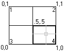

Autodesk AutoCAD 2021: ActiveX Developer's Guide > Control the AutoCAD Environment > About Controlling the Drawing Windows (VBA/ActiveX) > About Using Tiled Viewports (VBA/ActiveX) >
You enter points and select objects in the current viewport. To make a viewport current, use the ActiveViewport property.
You can iterate through existing viewports to find a particular viewport. To do this, first identify the name of the viewport configuration on which the desired viewport resides using the Name property. Additionally, if the viewport configuration has been split, each individual viewport on the configuration can be identified through the LowerLeftCorner and UpperRightCorner properties.
The LowerLeftCorner and UpperRightCorner properties represent the graphic placement of the viewport on the display. These properties are defined as follows (using a four-way split as an example):

In this example:
This example splits a viewport into four windows. It then iterates through all the viewports in the drawing and displays the viewport name and the lower-left and upper-right corner for each viewport.
Sub Ch3_IteratingViewportWindows()
' Create a new viewport and make it active
Dim vportObj As AcadViewport
Set vportObj = ThisDrawing.Viewports.Add("TEST_VIEWPORT")
ThisDrawing.ActiveViewport = vportObj
' Split vport into 4 windows
vportObj.Split acViewport4
' Iterate through the viewports,
' highlighting each viewport and displaying
' the upper right and lower left corners
' for each.
Dim vport As AcadViewport
Dim LLCorner As Variant
Dim URCorner As Variant
For Each vport In ThisDrawing.Viewports
ThisDrawing.ActiveViewport = vport
LLCorner = vport.LowerLeftCorner
URCorner = vport.UpperRightCorner
MsgBox "Viewport: " & vport.Name & " is now active." & _
vbCrLf & "Lower left corner: " & _
LLCorner(0) & ", " & LLCorner(1) & vbCrLf & _
"Upper right corner: " & _
URCorner(0) & ", " & URCorner(1)
Next vport
End Sub